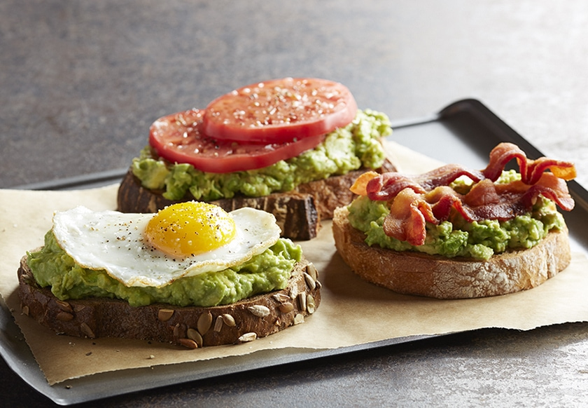

Avacado Toast

Description
The avacado toast is an excellent breakfast option or a light evening snack. At its core, mashed salted avacado is spread over butter toasted bread.
Of course, many different variations exist. Of my go to variations is to add friend eggs or sunny side up over the avacado spread. Top that off with some cheese and you are good to go.
Ingredients
- Bread (Preferably white)
- Ripe Avacados
- Salt
- Eggs
- Cheese
- Garlic clove
Steps
- Butter the bread and toast it
- Mash the avacado with some salt
- Fry some eggs on a pan
- Rub the clove of garlic on the toasted bread
- Spread the avacado on the bread
- Sprinkle some pepper
- Place the fried egg on the avacado spread
- Finally top this off with some grated cheese